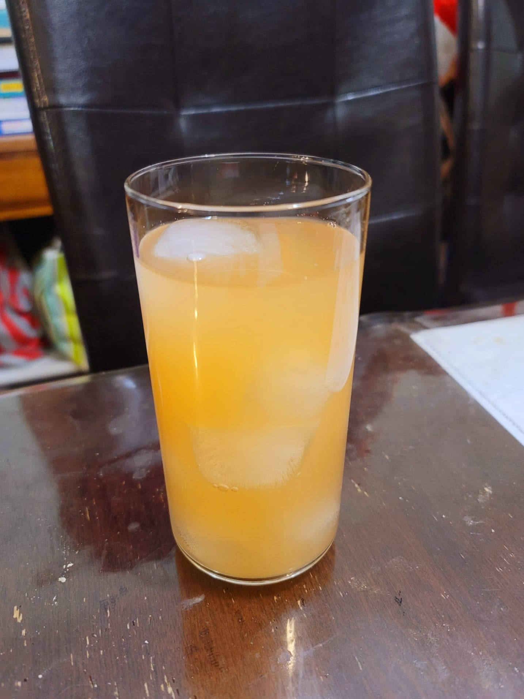

Orange Soda

Ingredients:
- 2 Oranges
- 1 Blood orange
- 4 cups Water, nonchlorinated
- 1/2 cup Sugar
- 1/4 cup Ginger bug
Instructions:
- Add the water and sugar to a pot and bring to a boil, stirring to dissolve the sugar.
- While the water heats, zest the oranges into the pot. When the water is boiling, remove from heat. Let steep until cooled completely to room temperature.
- Stir in the ginger bug and the juices of all the oranges. Then strain into flip-top bottles. Let ferment for 3-7 days at room temperature or until carbonated to preference. Transfer to fridge. Serve cold over ice.